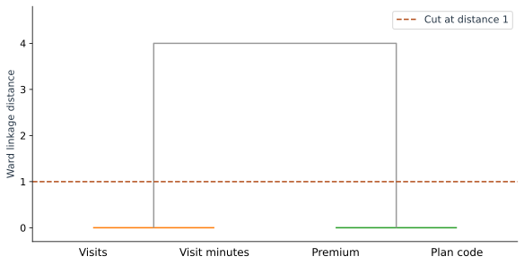

Simplify a Model by Grouping Similar Features
Suppose we receive four input columns for our four customers, although the original model only needed visits and plan. Two of the new columns repeat information. We will detect those pairs, keep readable representatives, and verify that the simplified model preserves predictions.
See the repeated information first
| Customer | Visits | Visit minutes | Premium | Plan code |
|---|---|---|---|---|
| Asha | 1 | 10 | 0 | 0 |
| Ben | 1 | 10 | 1 | 1 |
| Cara | 3 | 30 | 0 | 0 |
| Dev | 3 | 30 | 1 | 1 |
The minutes column is ten times visits. The last two columns are identical binary indicators. We can identify the duplicates by inspection, which gives us an answer to check when we introduce clustering.
Including these columns makes individual coefficients ambiguous. A visits term of 5 × visits gives exactly the same predictions as 0.5 × minutes. Countless mixtures of the two also give the same total. The data cannot uniquely decide how to divide that contribution between the duplicate measurements.
Compare patterns rather than units
Clustering will compare feature columns using Euclidean distances. Before comparing them, subtract each column’s mean and divide by its population standard deviation. Otherwise the minutes values would look far away from visits merely because they use a larger unit.
| Column | Mean | Std. dev. | Standardized values |
|---|---|---|---|
| Visits | 2 | 1 | −1, −1, 1, 1 |
| Visit minutes | 20 | 10 | −1, −1, 1, 1 |
| Premium | 0.5 | 0.5 | −1, 1, −1, 1 |
| Plan code | 0.5 | 0.5 | −1, 1, −1, 1 |
Visits and minutes now have distance zero. Visits and Premium differ by the vector [0, −2, 2, 0], so their distance is the square root of 0 + 4 + 4 + 0, about 2.828.
Here the plan columns are genuine 0/1 indicators and deliberately identical. This example is not a reason to treat arbitrary category labels such as Basic=1, Plus=2, Premium=3 as continuous distances. For a general feature shortlist, choose a similarity measure that fits the representations.
Cluster columns by turning them into rows
A clustering function normally regards each row as an item to cluster. We want each feature to be an item. Transpose the standardized matrix: its first row becomes the four standardized Visits values, its second becomes the four Minutes values, and so on.
Our matrix happens to be four by four, so its shape does not change. Its meaning does. With 100 customers and four features, this operation would change the shape from 100 × 4 to 4 × 100.
Follow the merges
Ward clustering starts with one cluster per feature and repeatedly merges the pair that gives the smallest increase in within-cluster squared variation. In our example, the identical pairs merge first.
| Step | Merge | SciPy linkage distance | Cluster size |
|---|---|---|---|
| 1 | Visits + minutes | 0 | 2 |
| 2 | Premium + plan code | 0 | 2 |
| 3 | Both pairs | 4 | 4 |
The last height is 4 in SciPy’s Ward convention. It is a cluster distance, not the raw 2.828 distance between two individual columns. A horizontal cut between 0 and 4 leaves two groups.


import numpy as np
from scipy.cluster.hierarchy import linkage, fcluster
from sklearn.preprocessing import StandardScaler
# X is the two-column array from Part 1.
wide = np.column_stack([X[:, 0], 10*X[:, 0], X[:, 1], X[:, 1]])
scaled = StandardScaler().fit_transform(wide)
merges = linkage(scaled.T, method="ward", metric="euclidean")
groups = fcluster(merges, t=1, criterion="distance")
print(groups) # [1, 1, 2, 2]; numeric labels are just group namesKeep the columns you can explain
Choose Visits from the activity group and Premium from the plan group. They preserve the original meanings and recover our two-input model. In this example there is no predictive information to lose because the removed columns are exact duplicates.
For nearly redundant features, that conclusion would need to be measured. A feature can share a broad pattern while adding useful detail. Use clustering to propose a shortlist, then compare fitted models using development data. Keep scaling, clustering, and selection inside the training part of each validation split.
Also remember what this particular distance measures: similarity in the same direction. Perfect negative correlation does not produce zero Euclidean distance after standardization. Ward clustering does not automatically group every form of redundancy.
Compare the models on separate rows
Here are eight invented evaluation rows, separate from the four training rows. The added columns follow the same duplicate definitions. Both the four-column and two-column fits give the prediction column shown below.
| Visits | Premium | Observed ($) | Predicted ($) |
|---|---|---|---|
| 0 | 0 | 21 | 20 |
| 1 | 1 | 34 | 35 |
| 2 | 0 | 32 | 30 |
| 2 | 1 | 38 | 40 |
| 3 | 0 | 36 | 35 |
| 4 | 0 | 39 | 40 |
| 4 | 1 | 52 | 50 |
| 5 | 1 | 53 | 55 |
The absolute errors are 1, 1, 2, 2, 1, 1, 2, 2. Their average is 12 / 8 = 1.5 dollars. The squared errors sum to 20, giving an RMSE of √(20 / 8) ≈ 1.581 dollars. The full lab checks that both fits make identical predictions on all eight rows.
We now have fewer coefficients to explain without changing predictions in this example. The next chapter uses plots to answer questions about this simpler model’s errors, coefficients, and contributions.
Sources and worked examples
This chapter develops ideas from the lessons below in A Data Odyssey’s Explainable AI playlist. The customer data, calculations, figures, and interactive examples here are original teaching examples. The creator’s companion notebooks use different datasets.
- 8 Characteristics of a Good Machine Learning Feature — Conor O’Sullivan, A Data Odyssey.
- Feature Selection using Hierarchical Clustering — Conor O’Sullivan, A Data Odyssey.
- SciPy: linkage and Ward distances